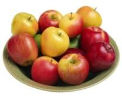

|
|
|

Настой тибетского молочного гриба снижает вес при ожирении.
Весь его секрет в том, что он преобразует жиры в более простые
соединения, которые затем сам же и выводит из организма человека.
Для того чтобы похудеть, следует пить настой тибетского молочного
гриба ежедневно через полчаса после еды и один - два раза в неделю
устраивать разгрузочные дни.
|